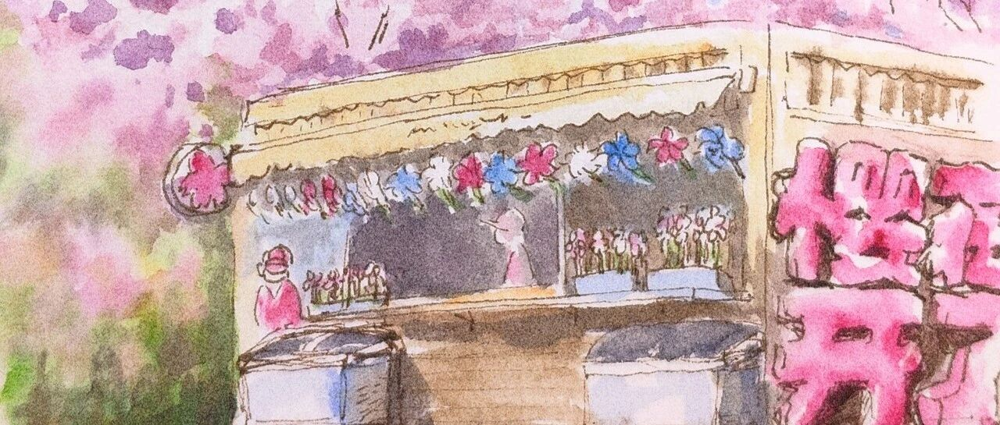

玉渊潭实况
LCX
LCX
PaintingDiary
2024年03月24日 18:02
北京
在小说阅读器中沉浸阅读
这周新的认知：对于赏花，花、阳光和蓝天真的是缺一不可。
昨天去玉渊潭，人虽然多，但也没有很影响赏花心情，
反而是灰扑扑的天气，硬生生把春和景明
变成了黑白电视的效果。
多少个滤镜+AI魔法换天都救不回来。
不过玉渊潭里面的一些小商店还是很有春日氛围的，
如果是个大好的蓝天，
那绝对又是另一番景色了吧~
就只能画一张小画歪歪一下了~
除
了
樱
花本
花
还
没ready
，
商
店
、
冰淇淋
、
咖啡店中的
各种樱
花周边
都
已经
万事俱
备了
~
如果想要赏樱，可以再等等，现在开的
还是桃花
~
好啦今天先到这里，欢迎留言、转发or给个“在看”~
也欢迎分享赏花地点给我~好啦
~下回见~